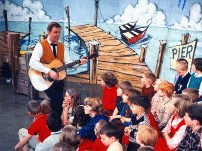
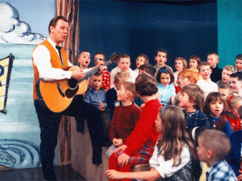
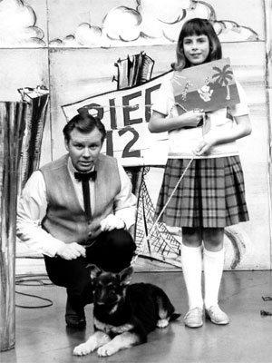

Popeye's Pier 12/The Ramblin' Rod Show
(1964-1969)
|
Taking
over
where
Addie
Bobkins
left
off,
Rodney
Andersen,
a.k.a.
Ramblin'
Rod
Anders
brought
his
own
unique
style
and
personality
to
Popeye's
Pier
12.
Popeye
cartoons
were
a
monster
hit
for
KPTV
in
the
early
1960s,
firmly
anchored
on
KPTV's
early-evening
schedule.
Rod's
youthful
good-looks,
guitar
strumming
and
gentle
good-nature
soon
established
him
as
one
of
Channel
12's
most
popular
on-air
personalities
(second,
perhaps,
only
to
genial
Gene
Brendler.)
|  |
Ramblin'
Rod
on
the
original
Pier
12
set,
circa
1965.
The
vest
and
tie
were
Rod's
standard
attire
for
the
first
several
years
of
the
show. |
During
the
1960s,
Rod's
outfit
would
change,
becoming
less
staid,
and
(dare
we
say
it)
a
little
sexier.
On
TV,
turtleneck
sweaters
were
the
attire
of
swingers
and
beach-based
private
eyes,
but
for
Ramblin'
Rod,
it
helped
to
create
a
rapport
with
the
children
who
waited
impatiently
to
visit
his
show.
Of
course,
Popeye
cartoons
remained
the
staple
of
the
program,
some
of
them
dating
back
to
the
early
part
of
the
century.
But
as
an
entertainer,
Popeye
could
hold
nary
a
candle
to
the
show's
real
star.
As
the
decade
came
to
a
close,
Ramblin'
Rod's
appeal
so
dominated
the
local
children's
TV
scene,
that
the
decision
was
soon
made
to
rename
the
program
"The
Ramblin'
Rod
Show."

|
|
Ramblin'
Rod
from
an
interview
in
TV-Radio
Mirror
Magazine,
June
1965
He's
crazy
about
children,
he
loves
working
with
them,
so,
being
a
smart
apple,
he
maneuvered
himself
a
job
where
he
gets
to
have
them
around
him.
We're
talking
about
Ramblin'
Rod
Anders
of
KPTV
in
Portland,
Ore.,
host
of
"Touche
Turtle
and
Friends"
and
"Popeye's
Pier
12,"
both
entertainment
for
the
younger
set.
|
|
| Animal
magnetism:
Ramblin'
Rod
sings
along
with
the
other
"stars"
of
his
show:
Wally
Gator,
Lippy
Lion
and
Touché
Turtle |
It's
a
good
thing
Rod
likes
kids,
because
he
has
five
of
his
own-Stephanie,
11;
Vincent,
9;
Karla,
7;
Robyn,
2;
and
Dana,
the
baby--apart
from
the
constant
group
of
neighborhood
moppet
visitors
and
friends.
He
and
his
wife,
Pati,
live
in
a
big
comfortable
house,
furnished
in
five-children
style
with
early
American
overtones.
The
"early
American"
comes
from
Rod's
second
big
hobby.
The
first
is
cars.
He's
car
crazy,
is
presently
driving
his
twenty-fourth
automobile.
He
swapped
for
his
first
when
he
was
fifteen,
before
he
was
able
or
legally
old
enough
to
drive,
so
it
had
to
sit
in
the
driveway,
where
he
painted
and
polished
it
until
his
sixteenth
birthday.
Since
then
he's
had
everything
from
a
'34
Chevy
to
his
present
car,
including,
at
one
point,
a
Model-A
Ford
and
a
very
elegant,
if
slightly
obsolete,
Cadillac
60
Special.
Pati
says
she
never
knows
what
will
pull
into
the
driveway
at
night.
|
|
| Rod
signs
autographs
after
the
show
for
a
crowd
of
adoring
fans. |
The
other
big
hobby
is
bargain-hunting
at
auctions,
antique
shops
and
just
plain
junk
shops,
and
the
fruits
thereof
are
to
be
seen
throughout
the
Anders
domicile.
For
instance,
a
beautiful
old
grandfather's
clock,
auction
purchased,
sits
right
next
to
a
refinished
table
obtained
for
Rod
forgets
how
much
under
ten
dollars--junk
shop
bargained.
Rod
says
he
once
reached
up
to
scratch
his
ear
at
an
auction,
and
discovered
he'd
bought
a
desk
chair.
Pati
found
a
place
for
it
and
it
looks
lovely.
That's
for
Mama
and
Papa.
The
kids
have
their
own
hobby--bantam
chickens.
A
rooster
and
his
harem
of
five
hens.
They're
all
tame
and
children-broken
and
the
Anders
kids
dress
them
in
doll
clothes,
take
them
for
rides
in
the
station
wagon,
carry
them
around
on
their
heads.
And
if
it's
sometimes
a
little
disconcerting
to
strangers
to
meet
a
small
girl
wearing
a
hen,
Rod
doesn't
worry
about
that
too
much.
"The
kids
enjoy
it,
the
bantams
enjoy
it,
it
does
no
harm,
so
why
not?"
Why
not
indeed?
|

The
musical
stylings
of
Ramblin'
Rod
were
a
staple
through
the
1960s,
and
children
were
encouraged
to
sing-along.
An
early,
behind-the-scenes
view
shows
just
how
cramped
the
bleachers
could
get.

In
show
business,
there's
a
warning
about
being
on
TV
with
dogs
and
children,
but
Rod
had
plenty
of
both,
and
always
managed
to
outshine
them.
Wally
Gator
and
Popeye
were
popular
attractions
during
the
early
years,
but
neither
was
as
animated
as
the
program's
host.
Classic
Bugs
Bunny
cartoons
were
run
and
rerun
(and
rerun),
but
kids
never
seemed
to
tire
of
them.
The
set,
circa
1968.
Rod's
outfit
changed
to
a
jacket
and
turtleneck
sweater,
but
the
guitar--and
singing--remained.
Visiting
Popeye's
Pier
12
soon
became
as
much
a
part
of
the
cub
scouts
(seated
in
the
back
row)
as
merit
badges
and
popsicle
stick
baskets.
From
April
1968,
Rod
poses
with
his
trusty
boat.
Rod
would
"ride"
the
craft
off
camera
at
the
end
of
each
show.
To
the
untrained
eyes
of
small
children,
it
appeared
that
the
ship
was
actually
carrying
Ramblin'
Rod
off
stage.
In
reality,
however,
the
boat
had
an
open
space
on
the
floor
and
small
wheels,
which
allowed
Rod
to
gently
push
the
boat
as
he
walked.
Popeye's
Pier
12
was
the
children's
show
in
Portland
during
the
1960s,
a
life-saver
for
both
Rod
Anders'
career,
and
the
now-independent
KPTV.
Even
Rod's
mischievous
sidekick
"Petunia
the
Skunk"
couldn't
overpower
the
sweet
smell
of
success.
Built
around
the
"Popeye"
cartoons,
Pier
12
dominated
the
children's
TV
scene
in
the
1960s.
An
able
musician,
Rod
often
played
guitar
for
his
audience.
Sometimes,
for
a
Christmas
episode
(when
no
children
would
be
available
to
appear
on
the
show)
he
would
spend
the
entire
half-hour
singing
and
strumming.

As
the
decade
came
to
a
close,
Popeye's
Pier
12
became
The
Rambiln'
Rod
Show,
reflecting
the
enormous
popularity
of
the
program's
host.

   
This
page
last
updated
on
August 24, 2025
|